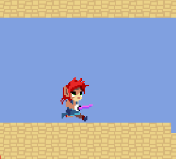

The Platformer Game Kit includes a Player character and 5 enemies:
| Character | Description | Appearance |
|---|---|---|
| Gino | The player character. |  |
| Gobbler | A monster that walks forward until it reaches a wall then turns around. If an enemy is in front of it, it attacks them. This enemy is on a different Team to the others so it will attack them as well as the player. |  |
| Gobbat | A bat monster that flies horizontally in a sine wave pattern and turns around if it hits a wall. |  |
| Maw Flower | A plant monster that can't move and periodically attacks to either side in a fixed pattern. |  |
| Naga | A snake monster that moves and attacks like a Gobbler, but is stronger and will also turn around if it would walk off a ledge. |  |
| Scarecrow | A humanoid monster which acts like a Naga and has a long weapon. |  |
The code structure of the characters is based on the concepts introduced in Animancer's Characters and Brains examples. The following table summarises the various components that make up each character.
| Component | Purpose |
|---|---|
Character |
The Character Component holds a centralised group of references to the common parts of a character and a Finite State Machine for their actions. Anything that every character (or almost every character) would have goes here so that other scripts can simply reference a |
BoxCollider2DRigidbody2DCharacterBody2DBoxCharacterBody2DGroundCharacterMovementAirCharacterMovement |
Physics components which manage the character's movements and prevent them from passing through other objects. These components don't decide which way the character wants to move, they simply execute the desired movement of the character's Brain. |
CharacterBrainPlayerBrainStatesPlayerInputManagerPlayerInputSystemBehaviourTreeBrain |
Each character has a Brain which decides which way they want to move and which actions they want to perform. This includes player input, AI, or anything else that would decide what a character wants to do. These components don't directly execute any of the logic involved in actually moving or performing an action, they simply indicate what they want for other components to execute. |
CharacterStateIdleStateJumpStateAttackStateEtc. |
States are Actions that the character can perform (such as Jump or Attack) and Modes they can be put in (such as Idle or Flinch). Anything a character can do which prevents them from doing other things at the same time is a state. |
Health |
Keeps track of the character's current and maximum Hit Points for the Combat system. |
SpriteRenderer |
Renders the character's current Sprite which gets changed by their animations. |
Animator |
The entry point into Unity's animation system required by Animancer. |
CharacterAnimancerComponent |
An AnimancerComponent for playing animations using Animancer with a couple of extra responsibilities: it controls whether the SpriteRenderer flips its Sprite horizontally depending on the Brain's desired movement and it also manages the character's active Hit Boxes. |
| Character Component | A centralised group of references to the common parts of a character and a Finite State Machine for their actions. |
| Animancer Component | ToDo |
| Physics | Characters use a BoxCollider2D with a Dynamic Rigidbody2D. |
| Brains | Components that decide what a character wants to do. |
| States | Components that represent actions a character can perform. |